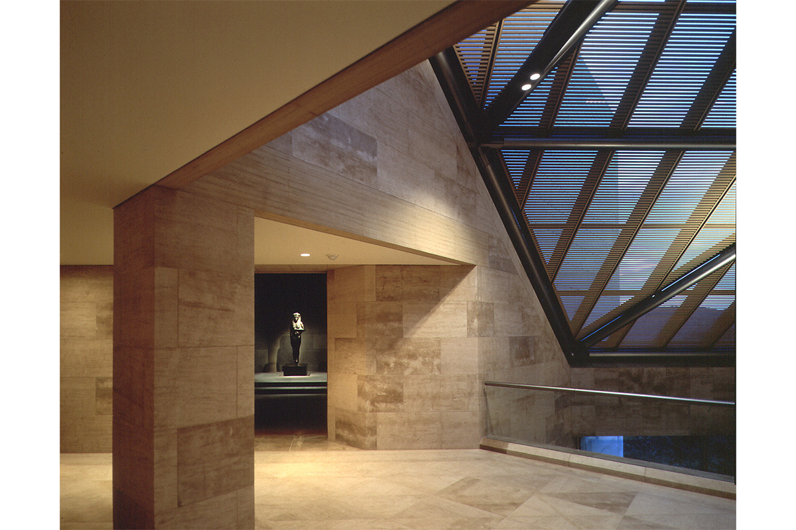
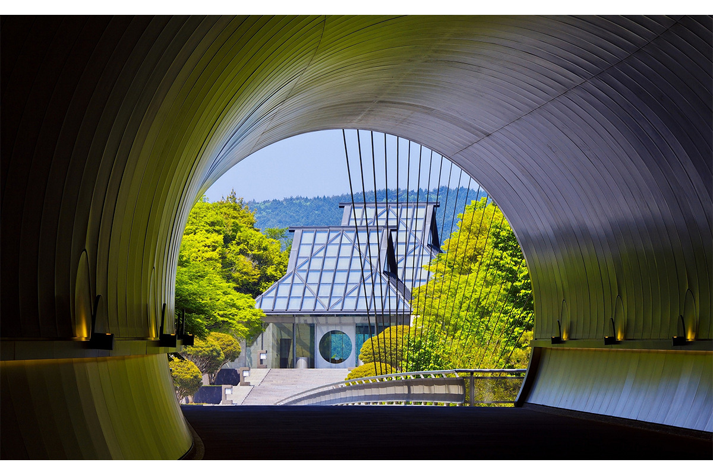
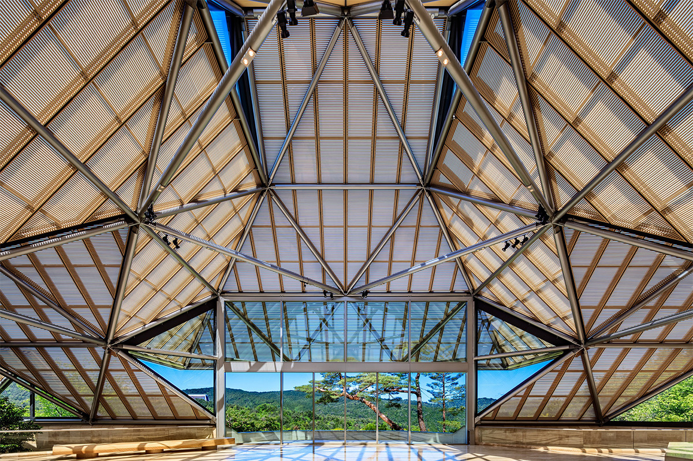
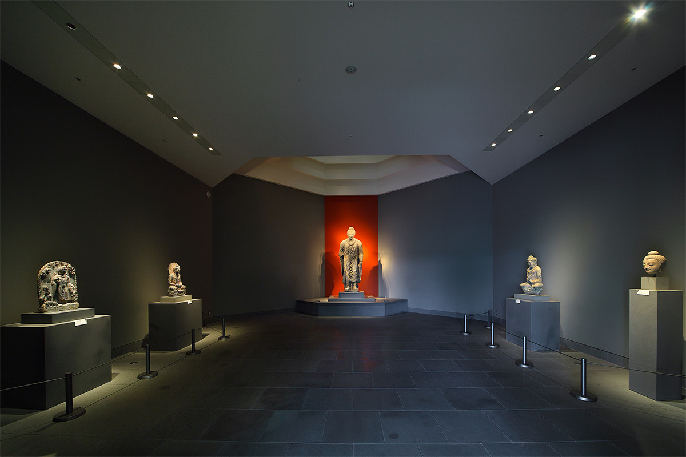
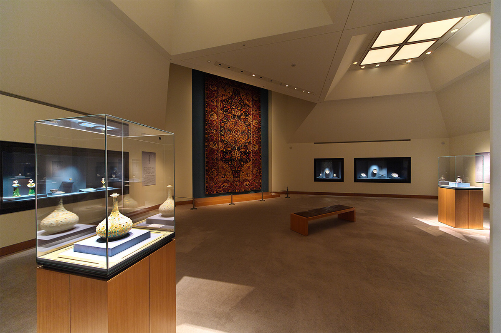
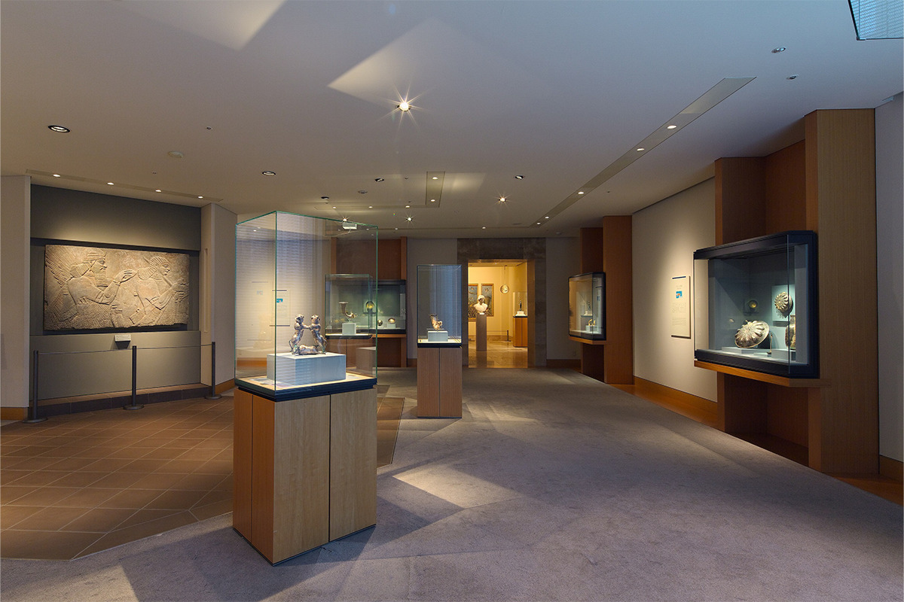
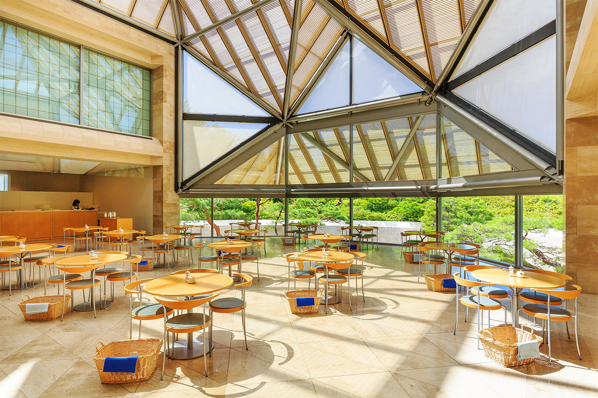
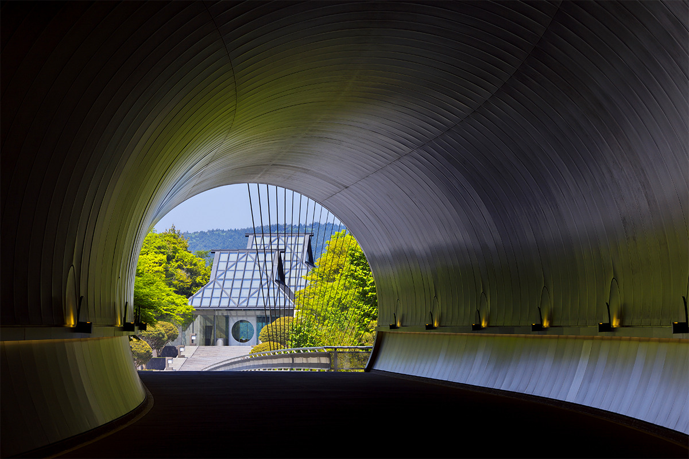

Префектура Сига · Кока, Сигараки · искусство
Музей «Михо»: путь к древнему искусству через серебряный тоннель Ио Мин Пэя
В лесистых горах у Сигараки стоит музей «Михо», где собрано около 3000 произведений искусства, от японской старины до древностей Египта и Китая. Здание спроектировал Ио Мин Пэй, автор стеклянной пирамиды Лувра, и задумал его как путь в потаённый рай.
Коллекция
Собрание, которое началось с чайной утвари
Музей «Михо» открылся в ноябре 1997 года в горной глуши Сигараки, в городе Кока префектуры Сига. Его основа это личное собрание Михоко Коямы, основательницы музея. Больше сорока лет она понемногу покупала то, что ей нравилось: утварь для чайной церемонии, синтоистские и буддийские святыни, каллиграфию и живопись, керамику, лаковые изделия.

Михоко Кояма хотела, чтобы искусство делало мир красивее, спокойнее и радостнее. С этой мыслью собрание вышло за пределы Японии, и рядом с японскими вещами появились древности со всего света.
Архитектура
Рай за тоннелем
Здание построил Ио Мин Пэй, архитектор стеклянной пирамиды парижского Лувра. Его главная мысль звучала так: «свет это ключ». Путь в музей он выстроил по мотивам «Записок о Персиковом источнике» китайского поэта Тао Юаньмина (IV–V века). В этой истории рыбак, привлечённый ароматом цветущей персиковой рощи, забредает в пещеру, а по ту сторону перед ним открывается райская страна.

В «Михо» гость повторяет путь рыбака. Аллея плакучих сакур приводит ко входу в тоннель, обшитый серебристым металлом. Весной на его стенах отражаются цветы, осенью красные клёны, и в каждое время года тоннель выглядит по-своему. Стены поглощают звук, поэтому внутри стоит полная тишина и кажется, что попал в другой мир.
На выходе из тоннеля перекинут подвесной мост через долину, а за ним видна входная группа с крышей в форме японской вальмово-двускатной кровли.

Самое сильное впечатление оставляет вестибюль. Большая дверь с круглым окном бесшумно разъезжается, и посетитель оказывается в просторном зале: свет падает сквозь стеклянную крышу, стены облицованы мягким бежевым известняком, а за окнами до самого горизонта тянутся спокойные горы. Открываются внутренние двери, и стеклянная крыша будто поднимается в такт шагам. Тонкие деревянные ламели под ней меняют угол, и с каждым шагом картина разворачивается, как японский свиток. Всё пространство живёт в едва заметном ритме дневного света.
Залы
От Японии до Древнего Востока
В зале каменной скульптуры Гандхары прохладно и полутемно. В глубине стоит статуя Будды, и красная стена за ней в свете, падающем с потолка, словно излучает энергию. Говорят, весь зал спроектировали именно под эту статую. Облик у неё как у Будды, но в складках одежды и чертах лица видна греко-римская школа скульптуры, поэтому статуя считается редкой ценностью.

Всего в собрании около 3000 предметов, из них шесть признаны важными культурными ценностями Японии. Постоянно выставлено от 250 до 300 вещей, а весной, летом и осенью проходят тематические выставки. Коллекция делится на две большие части: японское старинное искусство, включая чайную утварь и буддийские святыни, и искусство древнего мира из Египта, Западной и Южной Азии, Китая.


Отдых
Ресторан и кафе
После залов можно пообедать в ресторане «Пич Вэлли» в приёмном корпусе или выпить чаю в кафе музейного корпуса. В ресторане готовят из сезонных продуктов, выращенных почти без пестицидов и искусственных удобрений по методу натурального земледелия Сюмэй, и стараются сохранить их собственный вкус.

В кафе «Пайн вью» одна стена целиком стеклянная, здесь светло и просторно. К виду на горы подают домашние торты, японские сладости и напитки.

Вход для взрослых в 2022 году стоил 1300 иен. Музей работает не круглый год, а в весенний, летний и осенний сезоны.
Музей «Михо»
- Адрес
- префектура Сига, Кока, Сигараки, Тасиро-Момодани, 300
- Телефон
- +81 748-82-3411
- Часы работы
- 10:00–16:00 (последний вход в 15:00); открыт только весной, летом и осенью
- Выходные
- понедельник (если это праздник, музей открыт, а закрыт в следующий рабочий день)
- Цены / Вход
- взрослые 1300 иен (группы от 20 человек 1100 иен), студенты и старшеклассники 1000 иен (800 иен), до средней школы включительно бесплатно
- Сайт
- miho.jp